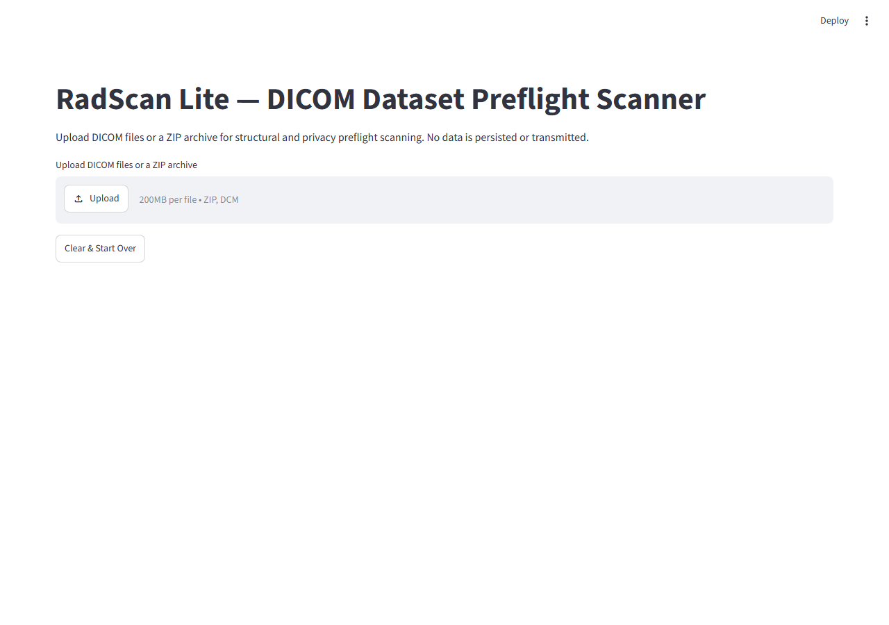
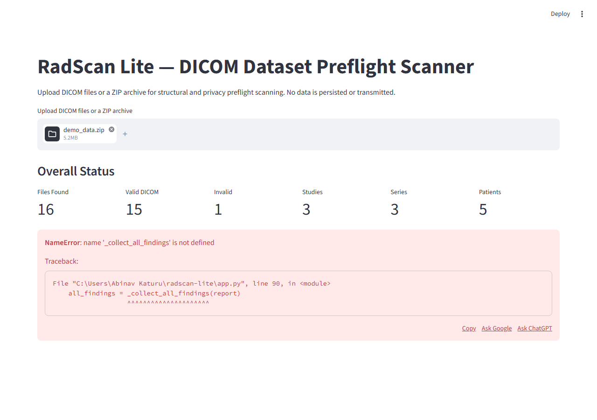

RadScan Lite
Local, read-only DICOM dataset preflight scanner for radiology researchers
Active
Git Required
Testing Mandatory
Production Ready
⚡ Quick Start
📙 Installation
pip install radscan-lite
streamlit run app.py📜 Test Suite
pytest -q
# 29 passed in 1.32s📈 Generate Demo Data
python scripts/generate_synthetic_data.py📊 Demo Results
Scanning a 15-file synthetic dataset (3 series: clean, inconsistent, privacy-warning)
15
Files Analyzed
15
Valid DICOM
34
Total Findings
5
Errors
8
Warnings
3
Series/Runs
5
Patients
1
Manual Reviews
📷 Screenshots

Fig 1. Upload interface — drag-and-drop DICOM files or ZIP archives

Fig 2. Overall status dashboard with metrics cards and findings

Fig 3. Findings grouped by severity with expandable sections

Fig 4. Privacy warnings — PHI fields detected (values not displayed)
🔍 Key Findings
ERROR
SERIES-001 — Inconsistent rows across series: {256, 512}
ERROR
SERIES-006 — Duplicate InstanceNumber values found in series
ERROR
SERIES-010 — Mixed modalities in series: {CT, MR}
ERROR
PRIV-BURNED_IN_ANNOTATION — BurnedInAnnotation is YES
WARNING
PRIV-PATIENTNAME — PHI field present (value not displayed)
WARNING
PRIV-PATIENTID — PHI field present (value not displayed)
WARNING
PRIV-PATIENTBIRTHDATE — PHI field present (value not displayed)
MANUAL REVIEW
PRIV-BURNED_IN_ANNOTATION — Missing or blank; visual review required
📖 Documentation
📄 Paper
Read the full technical paper describing the system design, evaluation, and results.
Read Paper